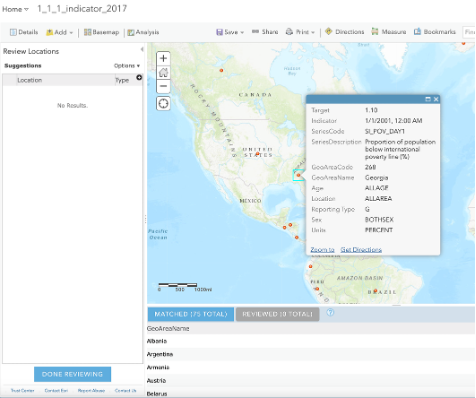
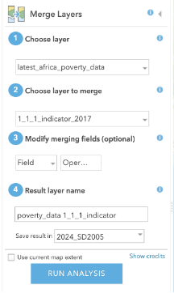

Lab No 4: Examine Global Poverty Using UN Sustainable Development Goals
Tutorial inspired on: ArcGIS Online blog entry
Estimated time of completion: 70 Minutes
Overview
Have you ever considered where pockets of poverty exist and who is most affected? Unfortunately, global trends show that children are most impacted by poverty. Around the world 385 million children live in extreme poverty, and in 2013 the World Bank found that 19.5 percent of children in 89 countries lived in a household that survived on U.S. $1.90 per day per person or less.
Key Learning Outcomes
By completing this tutorial, you should now be able to:
- Access and download UN SDG data from official portals
- Prepare and clean spatial data for analysis
- Create feature layers in ArcGIS Online through geocoding
- Perform spatial joins to combine multiple datasets
- Create choropleth maps to visualize quantitative data
- Develop bivariate maps to compare multiple indicators
- Configure effective pop-ups and legends for data communication
- Apply spatial analysis techniques to real-world policy questions
These skills are transferable to many other contexts, including local and national policy analysis, environmental monitoring, public health studies, and economic development planning.
Why is poverty such a critical issue?
Because it relates to the overall well-being of a person. Those living in poverty may lack access to basic food, housing, and healthcare. Growing up without consistent nutrition, shelter, and safety can have long-lasting developmental impacts on children and can cause lifelong problems.
Scottish Context Example: In Scotland, child poverty affects approximately 24% of children (around 240,000 children), with particular concentrations in areas like Glasgow, Dundee, and parts of Edinburgh. The Scottish Government has committed to reducing child poverty to less than 10% by 2030 through the Child Poverty (Scotland) Act 2017.
In 2015, the United Nations and world leaders developed a series of goals to improve situations for people, places and environments globally. In total, there are 17 Sustainable Development Goals that nations are striving to meet by 2035. This activity focuses on Goal 1: No Poverty and corresponding indicators that can be used to measure poverty.
Protecting Children with UN Sustainable Development Goals
Step 1: Visualize Global Poverty
Sustainable Development Goal 1, “No Poverty” is achieved when we “End poverty in all its forms everywhere,” and “should be understood as deprivation beyond the lack of income and resources to ensure a sustainable livelihood.”
Key Definition: Poverty is felt through hunger, malnutrition, limited access to basic services and educational opportunities, social discrimination and exclusion. In order to secure a future of sustainable economic growth, it is essential for countries to promote economic equality.
Task 1.1: Understanding SDG Goal 1
Visit the UN Sustainable Development site.
Most of the data for the Sustainable Development Goals is curated and maintained by the UN Statistics Division. There are also countries that host their own open data portals featured on the data page.
Scroll down and find the section called Sustainable Development Goals, click the first goal, No Poverty.
Familiarize yourself with this goal - take some time to understand what this goal is about and why it is the first goal.
Scottish Policy Example: Scotland’s approach to SDG 1 includes the Scottish Child Payment (£25 per week per child under 16), free school meals, and targeted support for families in the most deprived areas. The Scottish Index of Multiple Deprivation (SIMD) is used to identify areas requiring priority intervention.
Task 1.2: Accessing UN Data Portal
After you get a better understanding about the main facts that you can measure within this goal, now let’s apply the geographical approach to create web maps and apps that help you represent spatial data related to this goal.
Go to https://unstats.un.org/sdgs/dataportal/database and get the data related to the 1.1.1 indicator. Which corresponds to Proportion of population below international poverty line (%) – $2.15 per day. Once you are in the portal, follow the next options to get the required data.
In the Data Series type or select the 1.1.1 Indicator, in the Countries, areas or Regions section, click on Countries or Areas, and for Period make sure you selected only the 2017 year. (you should have around 783 observations). Click Show Results.
Expected Result: You will see a couple of tabs open up at the bottom corresponding to: - Proportion of population below international poverty line (%) SI_POV_DAY1 - Employed population below international poverty line, by sex and age (%) SI_POV_EMP1 indicators
Expand the SI_POV_DAY1 tab. At this point you should have a preview of a table that includes countries and 2017 poverty values. Now click Download XLS.
Task 1.3: Data Preparation
Open the downloaded file - you will see several countries are duplicated, due to data being collected at different scales (e.g., Sex, Location, Age). Filter the data to show only:
- Sex: BOTHSEX
- Location: ALLAREA
- Age: ALLAGE
Now you should have 75 records. Save the filtered table as a new Excel file (name it
1_1_1_indicator_filtered.xlsx).
Important Note: Data filtering is crucial for accurate spatial analysis. In Scotland, similar filtering would be applied when working with data from the Scottish Government’s statistics portal, ensuring consistency across geographic areas and demographic groups.
Task 1.4: Creating a Feature Layer in ArcGIS Online
Go to ArcGIS Online, sign up with your university credentials and go to Content. Now you will upload the filtered Excel file and create a Feature Layer with the data you downloaded and filtered.
Click New Item
Drag and drop your file or choose Device option and select the filtered Excel file (e.g.,
1_1_1_indicator_filtered.xlsx)When ArcGIS Online asks “How would you like to add this file?” Select the first option: Add and create a hosted feature layer or table. Click Next.
In the Field Box, the 13 columns are selected - no need to do anything here, just click Next.
In the Location Settings, select Addresses or place names. Open the Advanced location settings and select World in the Region box. Now in Location fields, make sure Location information is in one field is selected. Then in front of Address or Place, select the Field GeoAreaName, click Next.
⚠️ Credit Usage Warning: You will use approximately 3 Credits from your ArcGIS Online Account for this geocoding process.
Finally, provide a title, tag, and summary of the feature layer you are creating. Click Save.
ArcGIS Online will host your Excel file, geocode all the rows based on the name of the country (that’s why it uses credits) and then create a feature layer (the spatial data) that you can use to create web maps based on that indicator.
If you get a warning/notification, please click YES.
Task 1.5: Correcting Geocoding Errors
Common Issue: One common problem in geocoding when using names is that you could get locations in places that do not correspond to the intended place. ArcGIS Online provides a way to correct those mislocated places.
Once you have the Map Viewer open, you will notice that Georgia has been automatically coded to be in the USA.

Using the table at the bottom, locate Georgia and select it. You will see on your left a list of all the potential candidates that ArcGIS Online used to geocode Georgia. If you click on the third option, you will realize that one is the correct match (the country Georgia, not the US state). Click Match and then Done Reviewing.
Scottish Example: Similar geocoding issues might occur with place names like “Perth” (which could be matched to Perth, Australia instead of Perth, Scotland) or “Hamilton” (which might be matched to Hamilton, Canada instead of Hamilton, Scotland).
Once your geocoding process has finished, your map should look like this:
Observation: You will notice that most of the African countries have not reported any data, but here is when we can use and merge other data sources. We can use data reported by the World Bank to merge with the data you have geocoded.
Task 1.6: Adding Additional Data Sources
Click Add and Search For Layers to look for a published service. Make sure you have My Organization selected, and then type
latest_africa_poverty_data, and add the layer published by mfbp1_UoStAndrews.
Click Details again to see the table of contents with the two layers you have added to your map or click the back arrow to close the pane. In the Contents pane, hover over your latest_africa_poverty_data layer and click the Perform Analysis button.
Then in Manage Data, select Merge Layers.
- Make sure you have selected your poverty data layers and add a clear title (e.g., poverty_data_1_1_1_indicator). Important: Don’t forget to uncheck the “Use current map extent” option. Click Run Analysis.

Processing Note: Give ArcGIS Online some time to process your analysis, and you will have a single layer that joins the poverty data for most of the countries.
Technical Tip: A key aspect you need to consider for future data joins is ensuring how the attributes will be joined. In this case, both poverty values are included as integers and the heading is called “2017”, which has allowed us to have one single column with the values we need to plot a world poverty map.
- Click Save to save the current web map to your account. Add the title: “Indicator 1.1.1: Proportion of population below the international poverty line (percent)”
Task 1.7: Converting Points to Polygons
Current Issue: The data appears as points, but to better visualize it, the data should be converted to polygons.
- On the ribbon Layers, click Add, then click Living Atlas Layers. Search for “world countries” and add one of Esri’s World Countries layers by clicking the plus.
- Click the back arrow to close the pane. In the Contents pane, hover over your World Countries layer and click the Perform Analysis button.
- On the Perform Analysis pane, expand Summarize Data, then click Join Features.
- Configure the join as follows:
- Number 1, Choose target layer: Set to World Countries
- Choose layer to join to target layer: Choose the Indicator 1.1.1 layer
- Select the type(s) of join: Click Choose a spatial relationship and choose Intersects
- Choose join operation: Make sure Join one to one is selected
- Name the layer World Poverty, uncheck the “Use current map extent” box, and click Run Analysis.
Result: When the analysis finishes, the layer will be added to the map. By default, all the countries are shown in the same color. To see the data, you’ll change the symbology to show a choropleth map.
Task 1.8: Creating a Choropleth Map
- Uncheck all layers except for World Poverty, then hover over the World Poverty layer and click the Change Style button.
- On the Change Style pane, expand the Choose an attribute to show menu and choose 2017.
Understanding the Data: “2017” is the attribute that shows the latest reported value for any country that has reported data. The countries are symbolized with a default graduated color scheme that shows low values in light yellow and high values in dark blue. The light yellows blend into the basemap, so before analyzing the map, you’ll change the symbology.

For Counts and Amounts (Color) click Options, then click Symbols. Choose a color ramp that stands out from the basemap. If necessary, click Invert to show the higher values in darker colors.
Initial Analysis Results
Visual Analysis Findings: From a visual analysis, it appears that: - Europe, North America, and South America (partially) have the lowest levels of poverty - Several African countries report high levels of poverty - Some countries (such as Libya and Saudi Arabia) haven’t reported data for this metric
Scottish Context: Scotland, as part of the UK, would appear in the low poverty category on this global map, but this masks internal variations. Areas like the Glasgow conurbation, parts of Dundee, and some rural Highland communities experience higher poverty rates that would be visible in a more detailed, national-scale analysis.
- Click OK, then Done and save the map.
⚠️ Important Reminder: Always remember to save your map - ArcGIS Online does not automatically save your work, so constantly remember to save your progress!
Step 2: Compare Child Poverty
Now that you’ve mapped global poverty, you’ll map reported data for percentage of children involved in economic activity. This indicator is measured with the goal of eradicating forced labor and ending modern slavery and use of child soldiers.
Task 2.1: Adding Child Labor Data
On the ribbon, click Add and choose Search for Layers. (At this point you should know how to do it)
Click My Content and choose My Organization, then search for 8.7.1
Click the plus to add the result Indicator 8.7.1: Proportion of children engaged in economic activity, by sex and age (percent) to the map.
Task 2.2: Joining Child Labor Data with Poverty Data
Hover over the World Poverty layer and click Perform Analysis.
Expand Summarize Data and choose Join Features. Enter the parameters as follows:
- Choose target layer: World Poverty
- Choose layer to join to target layer: Indicator 8.7.1
- Join type: Spatial relationship – Intersects
- Join operation: one to one
- Result layer: Childhood Poverty
Uncheck “Use current map extent” and click Run Analysis.
Turn off all layers except for Childhood Poverty.
Hover over the Childhood Poverty layer and click Change Style.
Change the attribute to show to Value Latest Year.
Technical Note: Because you joined the datasets for global poverty and children in the workforce together, there will be many similar attribute names. Later, you’ll edit the names to make them clearer, but for now, remember that any attributes with a ‘1’ appended are from the economic labor layer.
Observation: Already, you can see that more countries have reported data for poverty rates. ArcGIS Online offers an easy way to visualize and compare relationships where data is present.
- Click Done.
Step 3: Compare Data to Find Patterns
Task 3.1: Creating a Bivariate Map
Hover over the Childhood Poverty layer and click the ellipses (three dots). In the More Options menu, click Copy.
Result: An identical layer is added to the map.
Turn off the original layer, then open the Change Style pane for the Childhood Poverty - copy.
Current State: The layer currently shows Value Latest Year from Indicator 8.7.1: Children engaged in economic activity. Now you’ll add the Value Latest Year attribute from Indicator 1.1.1: Global poverty for comparison.
Under Choose an attribute to show, click Add attribute and choose 2017.
Question for Understanding: Do you remember what that attribute represents and what layer it comes from?
Under Select a drawing style, scroll down to Relationship and click Select, then click Options.
- Click Symbols and choose the blue-pink-purple color palette. Click OK, then Done.
Understanding Bivariate Maps: The relationship symbology style is a way of creating bivariate maps that lets you easily compare two topics on a single map because only the countries with data for both indicators are shown.
Task 3.2: Improving Data Labels and Pop-ups
Hover over the Childhood Poverty - copy layer and click the three-dots. In the More Options menu, click Rename and replace the default name with Global Childhood Poverty.
Click the ellipses again and click Configure Pop-up.
Under Pop-up Contents, click Configure Attributes.
In the Configure Attributes window, uncheck everything except for Country, Value Latest Year, and 2017.
In the Field Alias column:
- Click 2017 and type Global Poverty
- Scroll down, click Value and type Engaged in Economic Activity
In the Configure Pop-up pane, click OK.
Result: Now when you click on a country, the pop-up shows only those three attributes with clear, understandable names.
Task 3.3: Analyzing the Legend and Patterns
- At the top of the Contents pane, click Legend.
Understanding the Legend: The Legend pane shows the symbology for all the layers that are turned on, and your changes will be reflected here. By comparing the legend to the map, you can see the two extremes of the spectrum:
- Countries shaded purple have a high poverty rate and large proportions of children working to support themselves or their families
- Countries in light pink have low poverty rates and small proportions of children at work
Complex Patterns: In between there are countries with mixed patterns: - Countries like Senegal with relatively low poverty rates but high proportions of children working - Countries like India with high poverty rates but small proportions of children contributing to the economy
Scottish Analysis Example: If we were to apply this analysis to Scotland at a regional level, we might find that: - Urban areas like Edinburgh and Aberdeen might show low poverty but some youth employment in service sectors - Rural Highland areas might show different patterns due to agricultural work and seasonal employment - Post-industrial areas like parts of Glasgow or Dundee might show higher poverty rates with different youth employment patterns
Analysis Questions and Policy Applications
If you toggle between layers in the Contents pane, the legend will help you perform more visual analysis on the countries. If you were looking at ways to base policy on this information, you could use the maps you created to answer the following questions:
SDG 1: No Poverty Questions
- Which countries have the highest poverty rates?
- Where does it appear that children are protected from labor?
- Where should international efforts to alleviate poverty be targeted?
- Within individual countries, what are some ways of improving the situation for children facing challenges associated with poverty?
Questions Pertaining to Both Indicators
- Where do you see overlaps in patterns between the two maps that you have created for each indicator?
- Where are the most affected areas that efforts should be focused toward helping improve the condition for children?
- What sorts of place-based policies could be designed to help improve the conditions for children?
Scottish Policy Application Example: Using similar spatial analysis techniques, Scottish policymakers could: - Target the Scottish Child Payment to areas with highest concentration of child poverty (using SIMD data) - Design place-based interventions for areas like Inverclyde, West Dunbartonshire, or parts of Glasgow where multiple deprivation indicators overlap - Develop rural-specific policies for Highland and Island communities where geographic isolation compounds poverty challenges - Create youth employment programs in areas where high poverty correlates with limited economic opportunities for young people